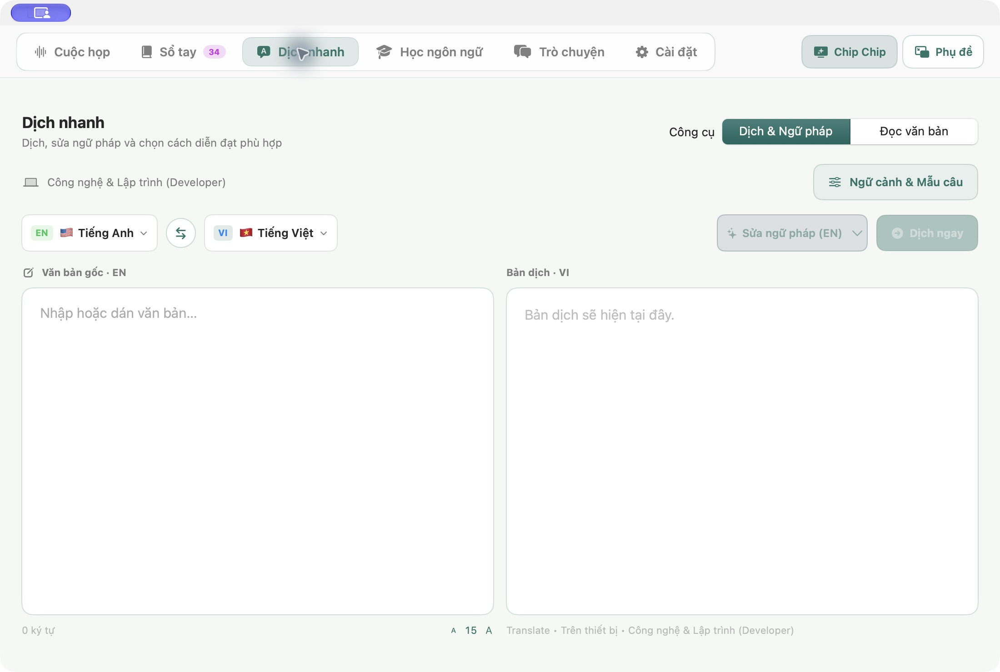
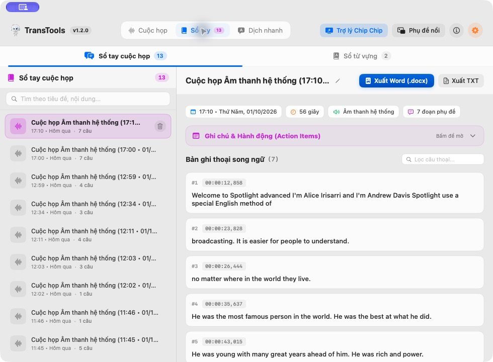
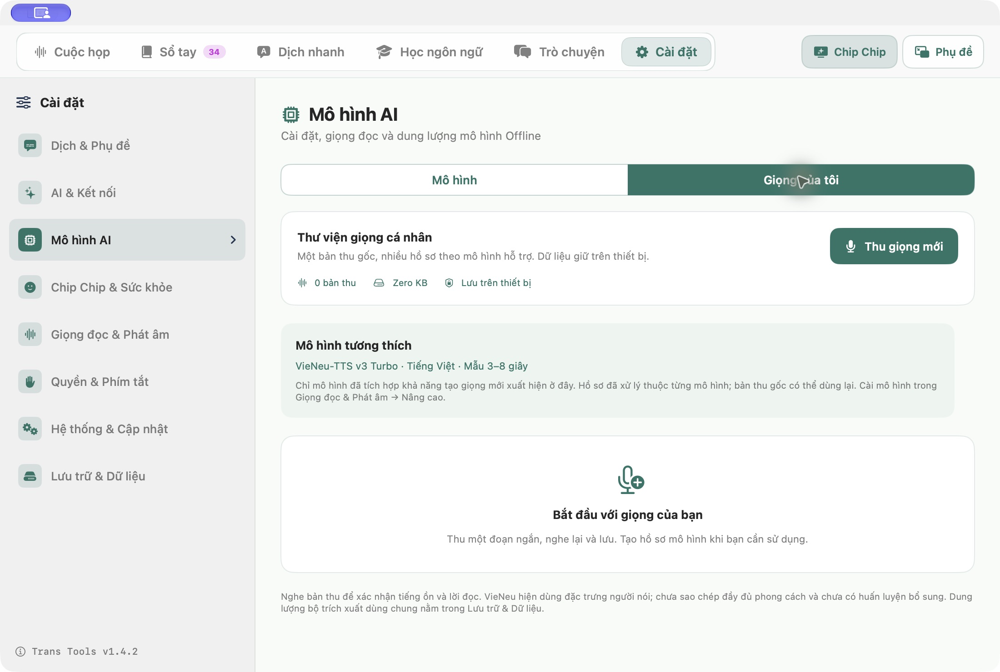
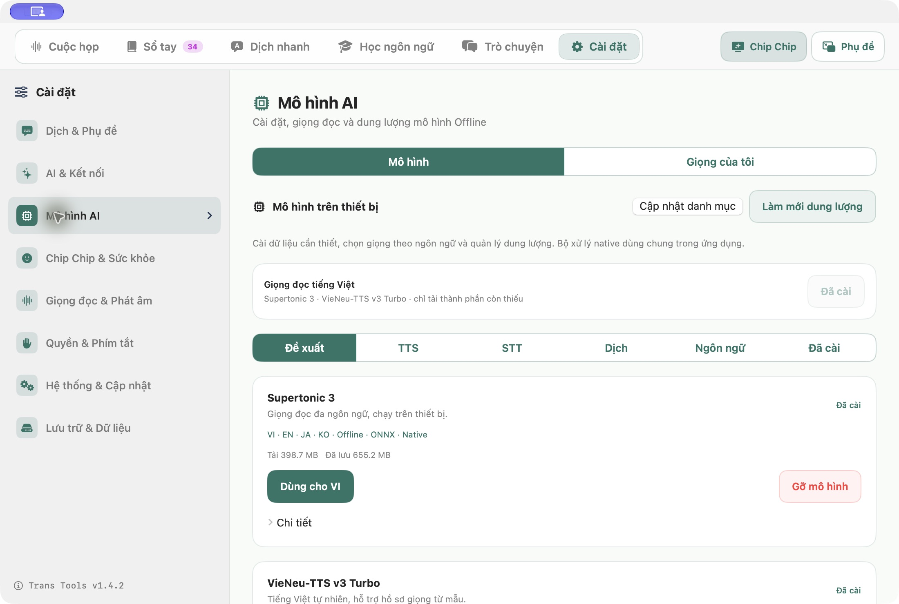

HƯỚNG DẪN · 07/10/2026
Nghe hiểu dễ dàng.
Luyện nói tự tin.
Hướng dẫn phiên bản 1.4.2. Ảnh từ ứng dụng Mac; bản Windows đang tiếp tục được kiểm thử.
1. Cuộc họp và phụ đề nổi
Chọn nguồn âm thanh và ngôn ngữ, rồi bấm Bắt đầu. Chọn xem tiếng gốc, bản dịch hoặc song ngữ. Mở Phụ đề để theo dõi trong cửa sổ nổi. Khi dừng, nội dung được lưu vào Sổ tay. Nhận dạng và bản dịch có thể sai; kiểm tra trước khi dùng làm biên bản.

2. Dịch nhanh
Nhập hoặc dán văn bản, chọn ngôn ngữ và lĩnh vực. Bấm Dịch ngay hoặc Command + Enter. Có thể sửa ngữ pháp và điều chỉnh cỡ chữ. Dịch màn hình cho phép kiểm tra chữ nhận diện trước khi dịch.

3. Đọc văn bản
Mở Dịch nhanh → Đọc văn bản. Chọn ngôn ngữ, dán nội dung rồi bấm đọc. Lưu âm thanh khi bộ giọng hỗ trợ. Tùy chọn AI hỗ trợ cách đọc số, ngày tháng và tỷ lệ gửi nội dung tới AI đã chọn; văn bản gốc không thay đổi.

4. Học ngôn ngữ
Chọn tiếng Anh, Nhật, Trung hoặc Hàn và mục tiêu học. Ôn từ đến hạn, nghe câu và luyện tình huống. Có thể tạo bài theo mục tiêu bằng AI. Chữ & Viết giúp nghe mẫu và luyện viết.

5. Trò chuyện
Chọn ngôn ngữ, chủ đề và mô tả tình huống. Bấm Bắt đầu để trợ lý mở lời. Thời gian chờ gửi điều chỉnh từ 1 đến 30 giây; chọn lâu hơn nếu bạn cần suy nghĩ. Có thể bật bản dịch tiếng Việt khi nói ngoại ngữ, lưu hội thoại và tiếp tục sau. Cần cấu hình AI; thời gian trả lời phụ thuộc dịch vụ.

6. Sổ tay và từ vựng
Lọc cuộc họp hoặc trò chuyện, tìm câu thoại, ghi chú và xuất tài liệu. Lưu từ mới khi dịch, nghe phát âm và ôn bằng thẻ từ.

7. Chọn giọng theo ngôn ngữ
Trong Cài đặt → Giọng đọc & Phát âm, chọn ngôn ngữ, bộ giọng và giọng đọc. Nghe thử, chỉnh tốc độ và âm lượng. Lựa chọn được lưu riêng cho từng ngôn ngữ. Bộ giọng Offline cần tải trước; giọng trực tuyến cần mạng.

8. Giọng của tôi
Mở Cài đặt → Mô hình AI → Giọng của tôi. Thu mẫu, nghe lại và lưu. Tạo hồ sơ với bộ giọng tương thích. Dữ liệu lưu trên thiết bị và có thể quản lý lại. Phiên bản hiện tại chưa có huấn luyện bổ sung; giọng tạo ra chưa bảo đảm sao chép đầy đủ phong cách.

9. Quản lý bộ giọng
Trong Mô hình AI, xem bộ đã cài, cập nhật danh sách và chọn bộ phù hợp cho ngôn ngữ. Nghe so sánh cùng một câu trước khi quyết định. Gỡ bộ không dùng khi muốn tiết kiệm dung lượng.

10. AI và dữ liệu
Trong AI & Kết nối, nhập khóa của nhà cung cấp và chọn mô hình đang khả dụng. Khi dùng AI hoặc dịch trực tuyến, văn bản được gửi tới dịch vụ đã chọn. Lưu trữ & Dữ liệu cho biết dung lượng từng nhóm và cho phép dọn dữ liệu tạm; các nút dọn này không xóa Sổ tay, từ vựng hoặc khóa kết nối.